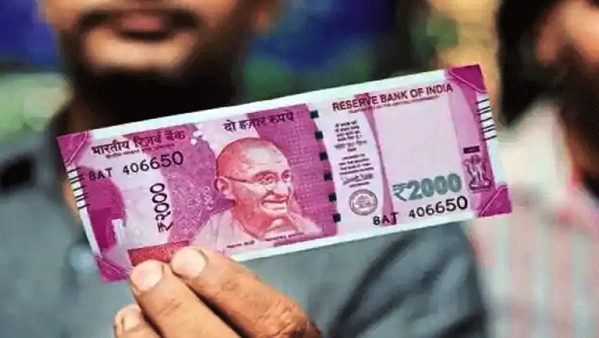

US Removes India From Currency Watch List:The US Department of Treasury has removed India from its Currency Monitoring List of major trading partners after the past two years. The list merits close attention to the countries currency practices and macroeconomic policies. Along with India, Italy, Mexico, Thailand and Vietnam have also been removed from the list.

MC Explains|Have Rs 2,000 notes disappeared from circulation?:Their circulation has reduced significantly, primarily because the RBI has not printed these notes in FY20, FY21, and FY22. In fact, they accounted for only 13.8% of all currency notes in circulation, in value terms, as on March 31, 2022. After being introduced in 2016, they accounted for 50.2% of the value of notes in circulation, as on March 31, 2017.
Mukesh Ambani Enters Race To Buy Premier League Giants Liverpool:Indian billionaire Mukesh Ambani has entered the race to bid for world-renowned English football club Liverpool FC's takeover.Ambani, chairman and managing director of Reliance Industries and rated by Forbes as the eighth richest person in the world, has enquired about the club, the English daily reported.
After TCS, now Infosys to resume WFO in a phased manner:Infosys is urging employees to come back to the office in a phased manner, as per an internal communication circulated amongst employees.Krishnamurthy Shankar, Executive Vice President and Group Head of Human Resource Development at Infosys said in the email that their approach will allow flexibility to employees and is not a “one size-fits-all approach.”